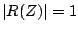
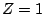
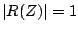
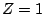
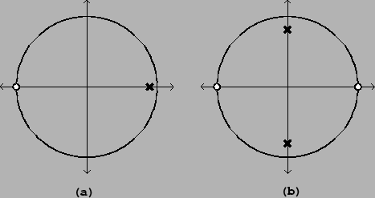

In Section 8.3.4 we saw a simple way to turn a low-pass filter into a band-pass one. It is tempting to apply the same method to turn our Butterworth low-pass filter into a higher-quality band-pass filter; but if we wish to preserve the high quality of the Butterworth filter we must be more careful than before in the design of the transformation used. In this section we will prepare the way to making the Butterworth band-pass filter by introducing a class of rational transformations of the complex plane which preserve the unit circle.
This discussion is adapted from [PB87], pp. 201-206 (I'm grateful to Julius Smith for this pointer). There the transformation is carried out in continuous time, but here we have adapted the method to operate in discrete time, in order to make the discussion self-contained.
The idea is to start with any filter with a transfer function as before:
Now suppose we can find a rational function,  , which distorts the
unit circle in some desirable way. For
, which distorts the
unit circle in some desirable way. For  to be a rational function means
that it can be written as a quotient of two polynomials (for example, the
transfer function
to be a rational function means
that it can be written as a quotient of two polynomials (for example, the
transfer function  is a rational function). That
is a rational function). That  sends points on the
unit circle to other points on the unit circle is just the condition that
 whenever . It can easily be checked that any function of
the form
sends points on the
unit circle to other points on the unit circle is just the condition that
 whenever . It can easily be checked that any function of
the form
Once we have a suitable rational function  , we can simply compose it with the
original transfer function
, we can simply compose it with the
original transfer function  to fabricate a new rational function,
to fabricate a new rational function,
For example, suppose we start with a one-zero, one-pole low-pass filter:
|  |